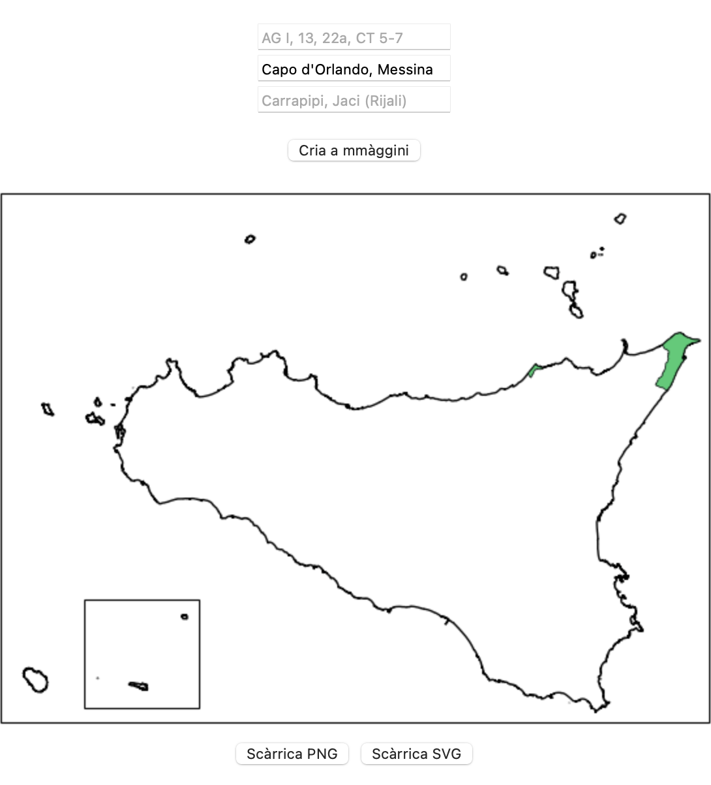
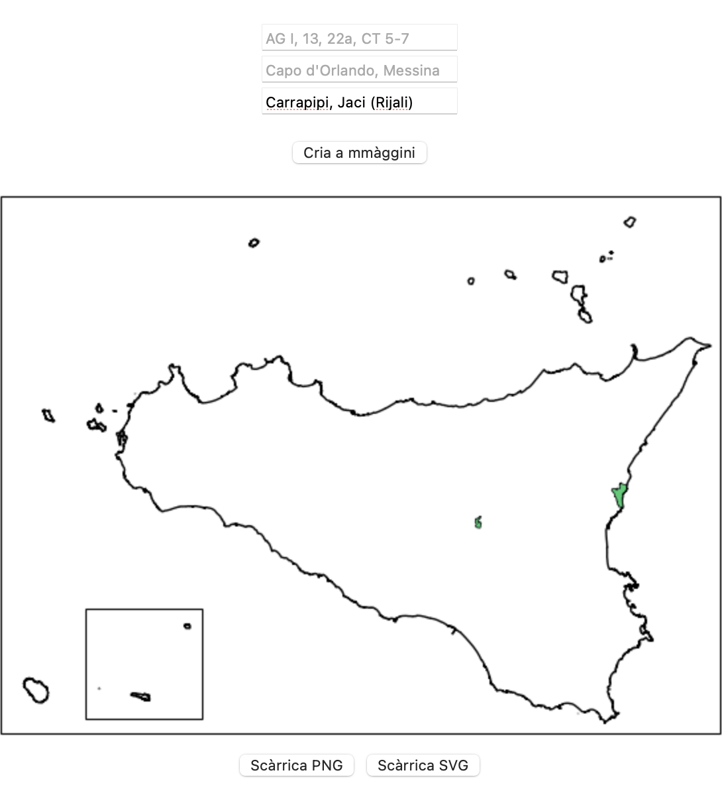
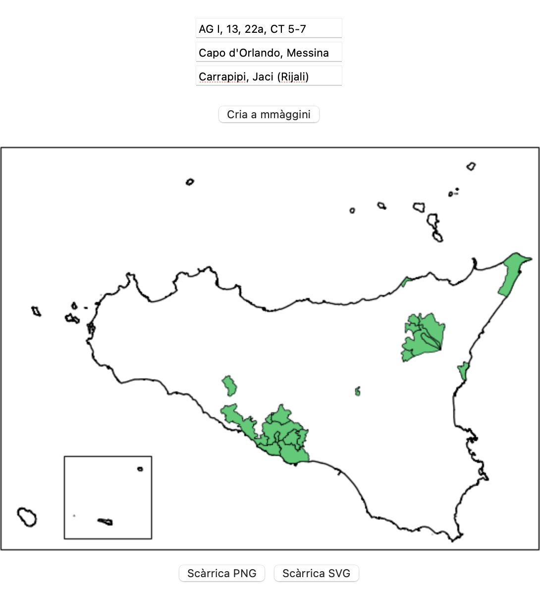

Quali cumuna? è n'app web pinzata pi taliari supra a na mappa i cumuna siciliani ca n'utenti ci passa cu na lista.
Pû testu ntê caseḍḍi, s'ànnu a sicutari sti règuli:
Si ponnu usari du' o tri caseḍḍi nzèmmula; appoi l'app l'allazza nta na lista sula.
A mmàggini criata si po scarricari macari ntê furmati PNG o SVG.
Accuminciamu vidennu comu s'usa a prima caseḍḍa. Facemu cuntu di sapiri chi na palora è diffusa ntê pruvinci di Girgenti e di Catania, p'esempiu ntê banni addisignati dî sigli
A stissa cosa si po uttèniri mittennu direttu i noma taliani ntâ sicunna caseḍḍa. P'esempiu, scrivennu "Capo d'Orlando, Messina", nesci fora u risurtatu cca sutta. Accura: dintra a sta caseḍḍa si ponnu mèttiri sulu i noma dî cumuna, no chiḍḍi dî frazzioni.
Ntâ terza caseḍḍa si ponnu mèttiri i noma dî cumuna 'n sicilianu, sicunnu a grafìa di Cademia Siciliana. P'esempiu, scrivennu "Carrapipi, Jaci (Rijali)", nesci fora u risurtatu cca sutta. Puru nta stu casu, sulu i noma dî cumuna si ponnu mèttiri. Accura: i cumuna nun su' tutti dispunìbbili a sta manera; a lista dî 195 cumuna (di 391) c'ànnu statu tradutti s'attrova a sta lijami.
Sparti, è pussìbbili usari tutti tri sti caseḍḍi ntô stissu mumentu, comu si vidi nta l'esempiu cca sutta. L'app allazzarà i dati nzitati nta na lista ùnica.
